Grafana Guide: First Steps in Grafana
|
This content was generated with the assistance of AI and should be verified against the official documentation before being relied on in production. |
Checked on 2026-11-11 against Grafana 13.3.x.
What you build
You start Grafana in the lab, sign in, learn where the main areas of the left navigation lead, and open the dashboard Bookshelf service health that the lab provisions. You change its time range, refresh it, and finally create an empty folder called Guides. Every later guide in this series saves the dashboards it builds in that folder.
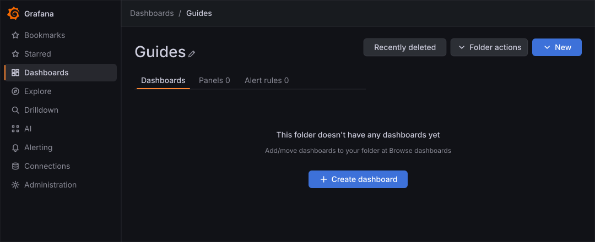
Before you start
-
Docker with Compose must be running. The Grafana profile of the hands-on lab starts Grafana, Prometheus, Loki, Tempo, the Bookshelf service and its load generator. Start it and wait about a minute:
cd lab docker compose --profile grafana up -d -
Open http://localhost:3000. The lab sign-in is
adminwith the passwordadmin. When Grafana 13.3 shows the screen Update your password, click Skip. -
This is the first guide of the Grafana series, so no earlier guide is required. The installation page, Installation and Configuration, explains the same product outside the lab.
-
The guide was checked on Grafana Enterprise 13.3.0 (the free image, no licence key). Creating a folder needs the Editor or Admin role of the organization;
adminhas it. -
The figures are drawings of the Grafana 13.3 user interface, not screenshots, so small details can differ from your screen. A highlighted box with a number marks the control of the step with the same number.
Steps
The guide walks through five small areas: the sign-in, the navigation, the dashboard list, a dashboard and a folder. There is no screen map in this guide; the screen maps of the later guides show the dashboard, the panel editor and Explore.
Start the lab and sign in
-
Open a terminal in the folder that holds the lab and start the Grafana profile. Skip this step if you started it already.
docker compose --profile grafana up -d -
Open http://localhost:3000 and type
adminin the field Email or username. -
Type
adminin the field Password. -
Click Log in.
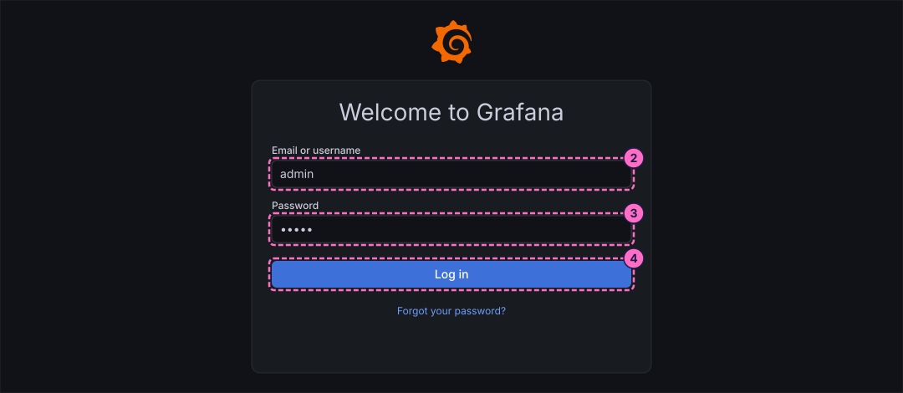
-
Grafana 13.3 now asks you to update the default password. Click Skip under the Submit button.
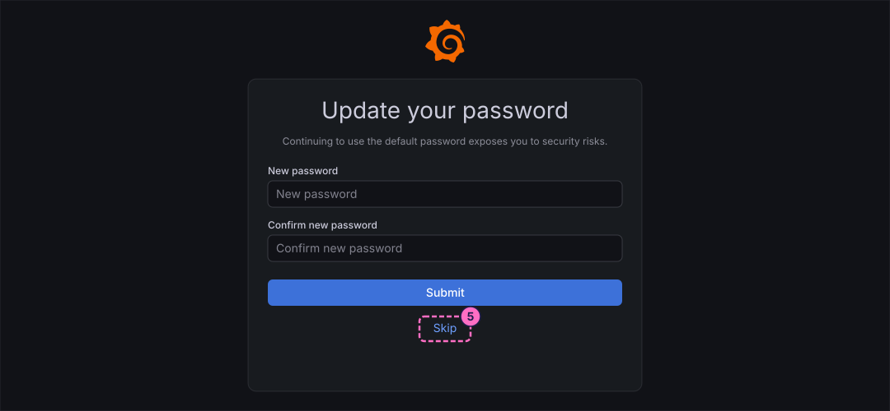
Tour the navigation
-
Look at the left navigation, which is docked open in 13.3. It lists Bookmarks, Starred, Dashboards, Explore, Drilldown, AI, Alerting, Connections and Administration. Grafana 13.3 has no separate Home entry in it.
-
In the top bar, click New (the + button).
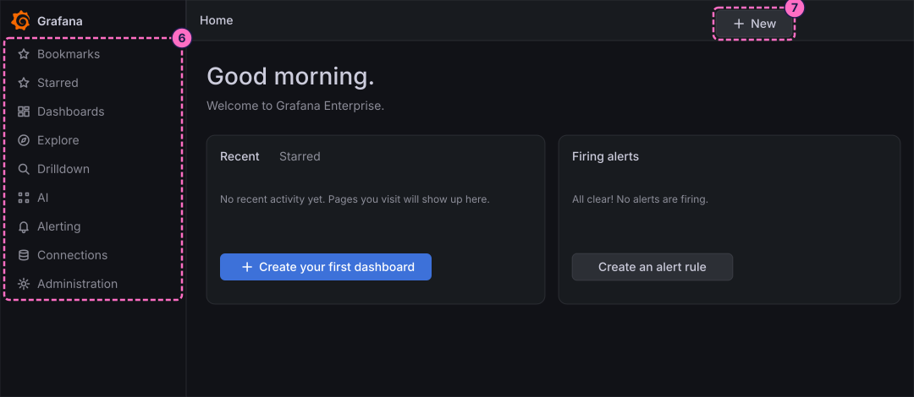
-
The menu offers New dashboard and Import dashboard under Dashboards and New alert rule under Alerting. Press the Escape key to close it.
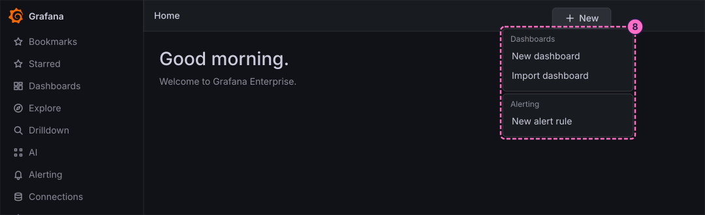
Open the provisioned dashboard
-
In the left navigation, click Dashboards.
-
Click the folder bookshelf to expand it.
-
Click the dashboard Bookshelf service health. The lab provisions it, so it exists as soon as Grafana starts.
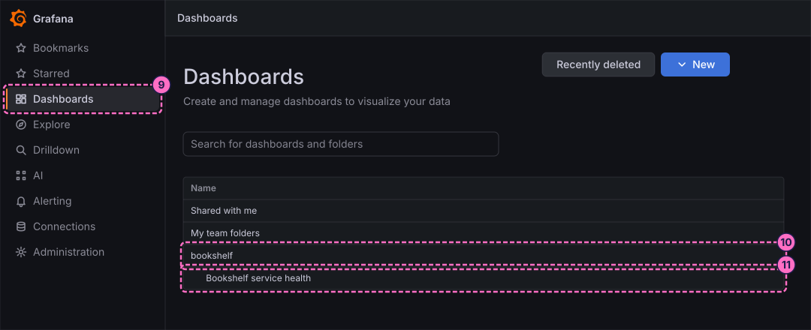
-
Look at the dashboard. The variables Job, Application and Route and the toggle Deployments are at the left of the toolbar. The toolbar at the right has the time range button, Refresh, the interval select, Share and Edit. The panels sit in three rows: Golden signals, Logs and traces and Dependencies.
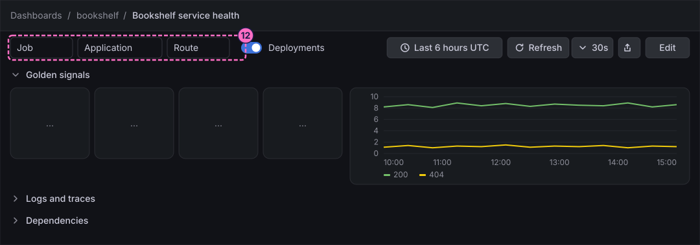
Change the time range and refresh
-
Click the time range button, which shows Last 6 hours UTC when the dashboard opens.
-
Choose a shorter range from the list. The button now shows the new range and every panel redraws.
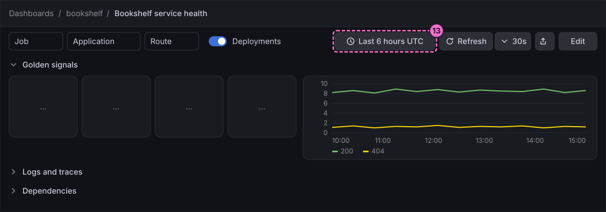
-
Click Refresh. All panels run their queries again.
-
Open the interval select next to Refresh. The lab provisions the dashboard with
30s, so it reloads itself every 30 seconds. Choose another interval from the list if you want, and the dashboard follows it.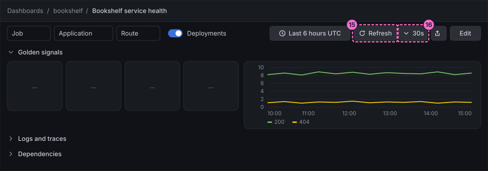
Create the folder Guides
-
In the left navigation, click Dashboards again.
-
Click New at the top right of the page.
-
Click New folder.
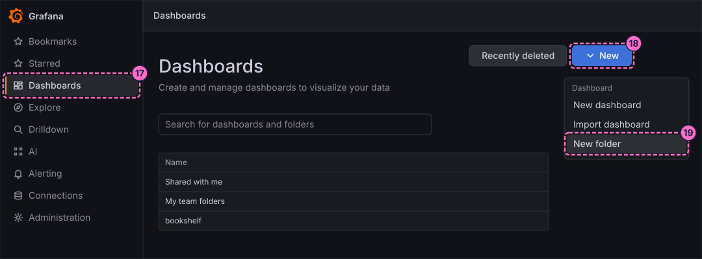
-
In the drawer New folder that opens on the right, type
Guidesin Folder name. -
Click Create.
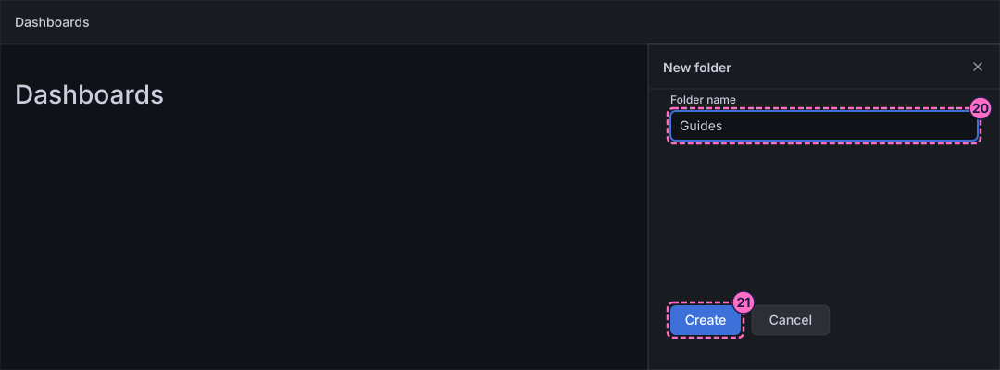
-
The folder page opens with the title Guides, the tabs Dashboards, Panels and Alert rules, and the message that the folder has no dashboards yet.
Check the result
Open Dashboards. The list must now show a folder Guides next to bookshelf, and the dashboard Bookshelf service health must still draw its panels for the range you chose.
To see the dashboard react to the traffic, change the mode of the load generator and press Refresh:
curl -X POST localhost:8090/mode/failingWait about a minute and refresh again; the panels of the row Golden signals show the failing requests. Restore normal traffic afterwards:
curl -X POST localhost:8090/mode/normalVariations
-
Mark the dashboard as a favorite with the star next to its name in the breadcrumbs, and find it again under Starred in the navigation.
-
Open the dashboard with a fixed address instead of the folder tree: http://localhost:3000/d/bookshelf-service-health.
What can go wrong
| Symptom | Cause | Fix |
|---|---|---|
http://localhost:3000 does not answer |
The containers are still starting, or the profile was not started. |
Wait a minute, then run |
Log in is refused |
The password was changed in an earlier run, or the volumes of an older lab keep a different admin password. |
Use the password you set earlier, or remove the volumes with |
The screen Update your password does not appear |
Grafana shows it only once, at the first sign-in with the default password. |
Nothing to fix; go on with the navigation. |
The panels of the dashboard are empty |
The lab started less than a minute ago, so Prometheus has few samples, or the load generator is stopped. |
Wait a minute and press Refresh. Check the mode with |
The folder Guides exists twice |
The steps were run twice. |
Check Dashboards before step 20 and open the existing folder instead of creating another. |
Clean up
Keep the folder: the other guides of this series save their dashboards in it. To remove everything the lab stores, stop the
profile with docker compose --profile grafana down -v, which also deletes the volumes and therefore the folder.
Where to go next
-
Previous guide: none. This is the first guide of the Grafana series; the hands-on lab describes the environment it runs in.
-
Next guide: Add a data source, which adds Prometheus, Loki, Tempo, PostgreSQL and TestData connections of your own.
-
Reference: Architecture and Ecosystem explains how the components behind these screens fit together, and Installation and Configuration covers installing and configuring Grafana outside the lab.